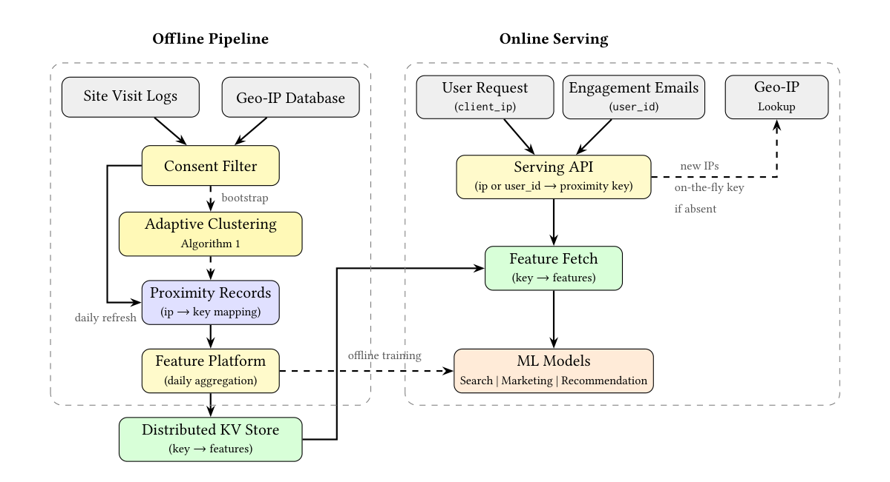
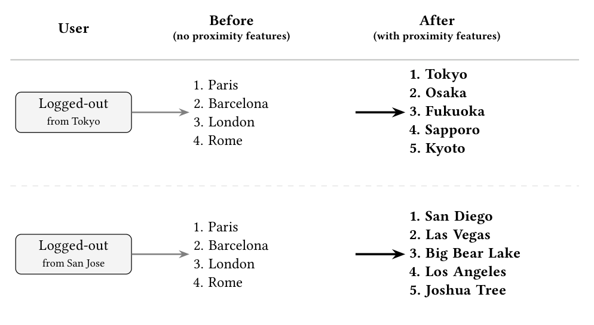
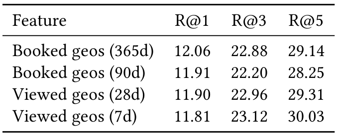
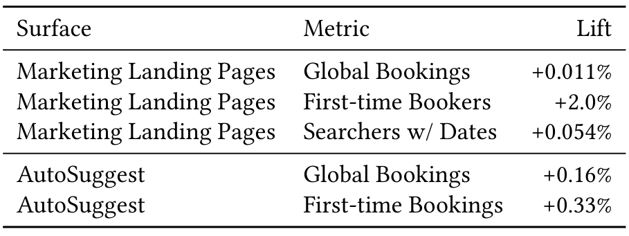
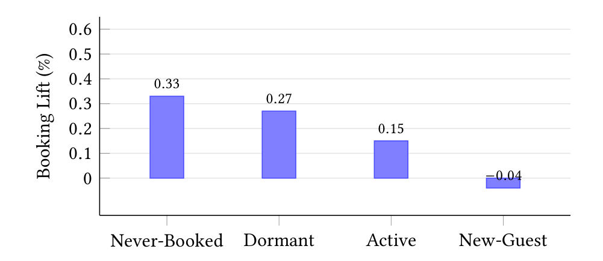
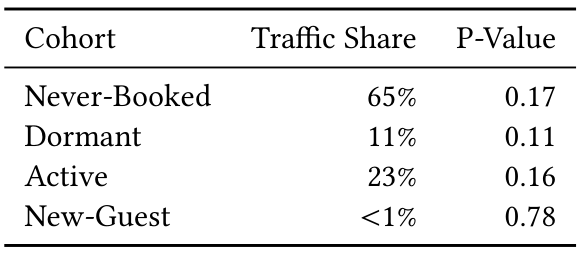

Proximity Features: Privacy-Compliant Cold-Start Personalization at Airbnb
Abstract
Personalization in two-sided marketplaces relies heavily on user-level features, yet for platforms with infrequent, high-consideration purchases, a large fraction of users lack sufficient history for effective recommendation, spanning both paid and organic channels. At Airbnb, a substantial share of search requests comes from logged-out or first-time users, with this challenge especially pronounced on paid-channel landing pages, leaving traditional user-level features unavailable for a large fraction of traffic. Privacy regulations and increasing restrictions on third-party cookies further limit identifier-based tracking for non-essential use cases. This paper introduces Proximity Features, a privacy-compliant feature system that groups users by geographic proximity using geo-IP data and an adaptive clustering algorithm, producing aggregated user-level signals for groups of approximately 1,000 nearby users—without requiring a persistent individual identifier at inference time. Privacy is preserved by design: the pipeline operates on consented, aggregated data only within consent-gated privacy controls.
The system is deployed in production at Airbnb, serving multiple surfaces including marketing landing pages and destination recommendation, with engagement emails integration under way. Online A/B experiments demonstrate statistically significant lifts in bookings, with the largest gains observed among users with absent or stale history.
Keywords:
cold-start personalization, geo-IP features, privacy-preserving machine learning, two-sided marketplace, recommendation systems, marketing personalization1. Introduction
Two-sided marketplaces such as Airbnb depend on personalization to match supply with demand effectively. Machine learning models powering search ranking, recommendation, and marketing rely on rich user-level features tied to individual identifiers. However, a substantial portion of marketplace traffic lacks the history needed to compute these features—a challenge known as the cold-start problem. Throughout this paper, user is used as a general term encompassing logged-in, logged-out, anonymous users, etc.
At Airbnb, the cold-start problem is pervasive across both paid and organic channels. On paid-channel landing pages (e.g., Google, Meta), the majority of users are logged out and many are first-time users with no prior Airbnb history. Standard user_id and cookie-based visitor_id features are either unavailable (for logged-out users) or too sparse to be useful (for first-time or low-activity users). Throughout this paper, cold-start refers to both cases: users for whom individual identifiers are inaccessible and users with insufficient behavioral history.
Compounding this challenge, evolving privacy regulations impose additional constraints. Under the General Data Protection Regulation (GDPR) (Voigt and von dem Bussche 2017), cookie-tracking requires explicit consent for non-essential use cases such as marketing personalization. With increasing restrictions on third-party cookies, identifier-based approaches face further erosion for anonymous users. Any feature system targeting cold-start users in this environment must work without individual tracking.
This paper addresses both challenges simultaneously with Proximity Features, a feature system that leverages aggregated geo-IP signals from a local group of nearby users. The key insight is that users from the same geographic area exhibit correlated travel preferences—they tend to search for and book similar destinations, prefer similar price ranges, and share demographic characteristics. By grouping approximately 1,000 users into a proximity bucket using an adaptive clustering algorithm over geo-IP coordinates, Proximity Features constructs rich user-level features immediately available for any user whose IP address can be geolocated—regardless of login state or prior history. Crucially, the system requires no user-level identifier at inference time, making it applicable to anonymous users for whom traditional personalization is otherwise unavailable.
The contributions of this paper are as follows:
- (1)
New features via proximity key. Proximity Features introduces a proximity key—a compact identifier for a local geographic group of 1,000 users—that serves as a privacy-safe analog to user_id in ML feature pipelines, enabling a new class of aggregated user-level features accessible across search ranking, recommendation, and marketing surfaces without requiring a persistent individual identifier at inference time.
- (2)
Cold-start resolution via group aggregation. An adaptive geo-IP clustering algorithm constructs proximity buckets at fine granularity in dense areas and coarser granularity in sparse areas, aggregating user-level signals from nearby users to fill the feature gap for users with absent or stale history.
- (3)
Privacy-by-design without ID-based tracking. The system operates entirely on aggregated, consented geo-IP data. No user_id or cookie-based visitor_id is required at inference time, making it resilient to third-party cookie deprecation and designed to operate within consent-gated, aggregated processing and deletion controls.
The paper presents the core clustering algorithm and production-scale system design (Section 2), followed by empirical results from A/B experiments across multiple surfaces (Section 4).
2. System Design
Figure 1 provides an overview of the Proximity Features system. Each component is described below.

2.1. Geo-IP Data Source
Geo-IP databases (Poese et al. 2011) map IP addresses to latitude/longitude coordinates. A regularly updated geo-IP data source covers the vast majority of Airbnb’s global traffic. In our internal analysis, city-level agreement is approximately 80%. Most IP addresses map to a single, stable latitude/longitude pair, while approximately 15% map to different coordinates on different days due to ISP address reassignment.
Importantly, coordinates from the geo-IP database are aggregated around the center of population rather than precise street-level locations—they cannot be used to identify specific addresses or households, even though they include more than two decimal places of precision. As a result, multiple IP addresses naturally map to the same latitude/longitude pair, typically representing a city center. This property is foundational to the privacy design described in Section 2.6.
As a data quality measure, bot traffic is filtered prior to clustering. Automated crawlers can account for a disproportionate share of requests at certain IP addresses, skewing user counts and distorting bucket sizes. Removing known-bot traffic ensures that the adaptive clustering algorithm operates on a representative distribution of human traffic.
2.2. Proximity Key
A proximity key uniquely identifies a geographic bucket of users. It is constructed from three components:
(1)
where is the proximity scalar controlling geographic tile size, is the number of IP hash buckets within that tile, and is a deterministic hash function (xxhash64 (Collet 2012) is used for consistency between offline and online paths). The key is base64-encoded for compact storage and transmission.
For dense locations (Phase 1 of the clustering algorithm), corresponds to the native precision of the geo-IP coordinates and provides sub-location granularity via IP hashing. For sparse locations (Phase 2), is set to a coarser quantization factor and . The scalar and bucket count are determined per tile by the adaptive clustering algorithm described next.
The proximity key serves as a privacy-safe analog to user_id: it identifies a local geographic area rather than an individual, is small and precise for densely populated areas, and coarser for sparse regions. For example, in a dense urban area, an IP address maps to a key encoding a fine-grained tile with multiple IP hash buckets: base64("lat:4071,lng:-7401,bucket:2"). In a sparse rural area, the same structure encodes a coarser tile with a single bucket: base64("lat:39,lng:-105,bucket:0"). Any ML model that currently conditions on user_id can condition on the proximity key instead to serve anonymous and cold-start users.
2.3. Adaptive Clustering Algorithm
Proximity bucketing is motivated by the following constrained spatial partitioning objective. Let be the set of distinct latitude/longitude pairs with their associated user counts. A spatially contiguous partition of is sought that maximizes the number of buckets —preserving the finest geographic granularity—subject to a minimum bucket size constraint:
(2)
where is the target bucket size. The spatial contiguity requirement ensures that each bucket corresponds to a geographic neighborhood; maximizing preserves the finest granularity possible. The threshold ensures each bucket aggregates over sufficiently many users, serving a dual objective: it is intended to provide a -anonymity-like privacy property (Sweeney 2002), and it provides enough observations for stable estimation of user-level features (e.g., destination distributions). Because the algorithm is greedy, is a target rather than a strict guarantee—some buckets may be smaller, particularly in low-traffic regions assigned at the coarsest resolution.
The challenge is that user density varies by orders of magnitude: a single coordinate near a major airport may correspond to tens of thousands of users, while rural coordinates may have only a handful. Solving Equation 2 exactly is NP-hard (Garey and Johnson 1979); it is an instance of the bin covering problem (Assmann et al. 1984). Rather than pursuing theoretical approximation guarantees, a greedy two-phase heuristic is proposed that exploits the structure of geo-IP data for computational efficiency and practical effectiveness (Algorithm 1).
Phase 1: Dense locations (refinement).
For latitude/longitude pairs with unique users and unique IP addresses, the location is refined by subdividing using IP hash buckets. The number of buckets is set to , targeting buckets of approximately users each. These locations retain the original (full-precision) latitude/longitude as their tile coordinates, with the IP bucket index providing sub-tile granularity. This phase maximizes geographic granularity for dense locations by retaining native coordinate precision; the target of approximately users per bucket is best-effort, as hash-based assignment does not guarantee perfectly uniform distribution.
Phase 2: Sparse locations (coarsening).
For the remaining locations, a multi-pass coarsening procedure is applied, analogous to adaptive mesh refinement (Berger and Oliger 1984), where resolution is reduced until sufficient mass accumulates in each cell. The algorithm iterates over decreasing scalar values for . At each pass, all remaining coordinates are quantized by and the number of unique users per quantized tile is computed. When the fraction of qualifying tiles (those with ) meets the ratio threshold , they are assigned at this scalar level, and their constituent coordinates are removed from subsequent passes. This continues until all coordinates are assigned or the minimum scalar is reached.
The result is an adaptive resolution map: urban centers receive fine-grained tiles (high ), while rural areas are grouped into coarser tiles (low ). No IP bucketing is applied for sparse locations (). The greedy fine-to-coarse strategy ensures that each assigned tile satisfies the bucket size constraint at the finest resolution possible, capturing the same design tradeoff as Equation 2: maximizing geographic granularity subject to bucket-size constraints.
Complexity.
Each pass requires a single group-by aggregation over the remaining data. With passes (, typically ), the total cost is where is the number of distinct latitude/longitude pairs. Because coordinates from the geo-IP database are pre-aggregated around population centers, is orders of magnitude smaller than the number of raw IP addresses—substantially cheaper than general spatial clustering algorithms (Ester et al. 1996; Bentley 1975).
Parameter selection.
The algorithm is governed by a small set of parameters: target bucket size , minimum IP count , scalar range , and ratio threshold . Exact production settings are omitted because they were tuned on proprietary traffic distributions and are tightly coupled to Airbnb-specific site visit volume. Illustrative values such as and are provided only to convey the operating regime, not as universal or production defaults. A grid of candidate values was evaluated using offline destination prediction accuracy (Recall@), selecting the combination that maximized predictive signal while maintaining the bucket size target. This empirical tuning is part of the greedy design: rather than solving the partitioning problem exactly, the heuristic is parameterized and values are selected that perform best in practice.
Key stability.
Proximity records are stable at multiple levels. Latitude/longitude coordinates from the geo-IP database are inherently stable, as they are anchored to population centers rather than individual addresses. The IP-to-coordinate mapping is also mostly stable: the majority of IP addresses resolve to the same coordinates over time, with only a small fraction shifting due to ISP address reassignment. Together, these properties mean that proximity keys change infrequently—the same key assignment can serve production traffic for years without re-clustering. The key partition used throughout this paper was bootstrapped on 2023 site visit data and has remained in production without re-clustering since. The daily batch pipeline handles incremental changes (new IPs, occasional coordinate shifts, etc.) by refreshing the IP-to-key mapping, the coordinate-to-scalar mapping, and the tile-to-bucket-count mapping. Features, by contrast, are refreshed daily, reflecting evolving user signals over the stable key partition. This decoupling of keys and features minimizes maintenance overhead while keeping signals fresh.
Proximity keys are also robust to IP address reassignment. Since proximity features represent aggregate group signals rather than individual behavior, geographic consistency at the group level is what matters—not per-IP stability. An IP that shifts from a suburban area to a nearby city center is reassigned to the corresponding proximity bucket; its signals enrich both buckets over time. The only failure case would be a gross misassignment (e.g., an IP in Los Angeles resolving to New York), which is rare and mitigated by the geo-IP data quality checks described above.
2.4. Feature Computation
Features are computed daily over each proximity bucket and stored in a distributed key-value store. They fall into three categories: short-term engagement (7/28/56-day windows: top destinations, room types, median price, search parameters); long-term booking patterns (28/90/365-day windows: booked destinations, listing attributes, travel party characteristics); and demographics (birth decade distribution, bucket size, geographic metadata).
Short-term features additionally capture search intent signals: typical values for party size, trip duration, listing prices, and travel distance. Long-term features include travel party attributes such as the fraction of bookings involving pets, families, or groups—signals otherwise unavailable for cold-start users. Multiple aggregation windows are retained rather than collapsed into a single value, allowing downstream models to select the time horizon most predictive for their task, as validated by the offline recall results in Section 4.
2.5. Serving
Proximity features support both online and offline consumption via a unified serving API. For real-time surfaces, the client_ip of the visiting user, as sourced from the CDN, is resolved to a proximity key—first via a daily batch mapping, falling back to on-the-fly key computation for unseen IPs—and the corresponding features are fetched from the KV store. The API is a soft dependency: models proceed with a degraded feature vector if the lookup exceeds a 60ms timeout. For batch channels (e.g., engagement emails), callers pass a user_id; the API resolves it to a recent IP and follows the same flow.
For unseen IPs, the on-the-fly algorithm computes a proximity key in real time without requiring a full re-clustering: (1) the IP is geolocated to (lat, lng); (2) the proximity scalar for that coordinate is fetched from the KV store; (3) if no scalar exists, a default of is used; (4) the quantized geo tile is computed; (5) the bucket count for that tile is fetched from the KV store; and (6) the key is computed as:
This mirrors the offline key construction (Equation 1) exactly, ensuring new IPs always receive a valid, consistent proximity key. If the bucket count lookup misses, the API returns no proximity key and the model proceeds via the soft dependency mechanism; this occurs in fewer than 0.5% of requests in practice.
2.6. Privacy Design
Proximity Features achieve privacy through layered obfuscation, beginning with data selection. The input dataset for the clustering algorithm excludes users who did not provide consent, respecting user choice from the outset.
At the geolocation layer, the latitude and longitude coordinates from the geo-IP database are already aggregated around population centers—they cannot identify specific addresses or households, even though they include more than two decimal places of precision. As a result, multiple IP addresses naturally map to the same latitude/longitude pair, typically representing a city center.
Note that users connecting via VPN are assigned to the proximity bucket of the VPN exit node rather than their physical location; this reflects a deliberate user choice and is consistent with the system’s privacy-respecting design.
Building on this inherent coarseness, the adaptive clustering algorithm applies additional aggregation to form local groups targeting approximately 1,000 users. All modeling is performed at this group level: the features associated with a proximity key reflect the collective patterns of the group, not the actions of any individual. This ensures that individual user behavior is masked within the aggregate, avoiding individual tracking entirely.
Beyond the algorithmic design, the system enforces operational safeguards:
- •
No persistent individual identifier at inference. The real-time serving path requires only client_ip—no persistent user ID or cookie-based ID is needed. (Offline callers may pass a user_id, which the API resolves to an IP internally.)
- •
Consent-gated pipeline. Both the clustering input data and the feature computation pipeline are integrated with a consent management framework, ensuring only consented data is used throughout.
- •
Privacy and data-governance controls. PII tables have short retention windows, and non-PII tables undergo regular selective deletion in accordance with data governance policies.
3. Applications
Proximity Features are designed as a reusable feature layer that can be integrated into any ML model receiving user traffic. Two launched applications and one offline use case are described below.
3.1. Marketing Landing Pages
The term Marketing Landing Pages refers to pages where users arrive from external channels such as paid advertising (e.g., Google and Meta ads) and organic search, landing on customized pages displaying personalized listing recommendations. These pages have the highest cold-start rate across Airbnb surfaces, and the listing recommender operated with severely sparse feature vectors for the majority of traffic prior to proximity features.
By incorporating proximity features, the model gains access to the booking and browsing patterns of nearby users, enabling meaningful personalization even for completely anonymous traffic. This application was launched across two marketing-entry surfaces in December 2024 and January 2025. For external presentation, these two separate experiments are grouped under the label Marketing Landing Pages because they share a similar cold-start listing recommendation setting. The A/B results in Table 2 report aggregate lift across both surfaces.
3.2. Destination Recommendation
The Airbnb homepage features a destination suggestion module (AutoSuggest) that recommends travel destinations as users interact with the search bar. This module is powered by a destination intent model that predicts which destinations a user is likely to book.
The baseline model (V1) relied on 15 features derived from user search and booking history. For logged-out or first-time users, these features were empty, and the model fell back to a static list of globally popular destinations—the same recommendations regardless of the user’s location or context.
The updated model (V2) incorporates 26 features (13 new, 2 removed), including proximity features such as the most-booked destinations and most-viewed locations by nearby users. With these signals, the model replaces generic recommendations with location-aware suggestions. For example, a user from Seoul now sees destinations popular among nearby travelers (e.g., Jeju Island, Osaka) rather than a global default list.
Figure 2 illustrates this effect for two logged-out users. Separately, architectural improvements made V2 37% smaller than V1 in parameter count, reducing inference latency; this is orthogonal to the proximity feature contribution. This application was launched in March 2026.

3.3. Engagement Emails
Beyond real-time surfaces, proximity features are being integrated into offline batch use cases. In engagement email campaigns, Airbnb sends personalized listing and destination recommendations to users. The serving infrastructure is in place: each recipient’s user_id can be passed to the same serving API, which internally resolves it to the most recently logged IP address and retrieves the corresponding proximity key and features (Section 2). Experiment integration is currently underway to validate the lift for users with limited booking history.
4. Experiments
Proximity Features are evaluated through both offline metrics and online A/B experiments across production surfaces.
4.1. Offline Evaluation
To assess the predictive signal of proximity features in isolation, the top- destinations are extracted from proximity feature histograms (booked and viewed geos at various time windows) and Recall@ is measured against actual bookings in a subsequent 90-day period.
Setup.
User–feature snapshots are sampled from a 90-day observation period. Each feature has its own aggregation window (e.g., 7-day, 28-day, or 365-day), reflecting different time horizons. Booking labels are sourced from the subsequent 90 days. Results are reported for low-activity users—those with limited booking history—the primary target population for proximity features.

Table 1 shows that proximity features alone achieve Recall@5 of approximately 29–30% for geo-level destination prediction among low-activity users, indicating strong geographic signal. Notably, short-term viewed-geo features (7-day window) perform comparably to long-term booked-geo features (365-day window), suggesting that recent browsing activity within a proximity bucket carries substantial predictive value.
In an offline ablation for the Destination Intent Model V2 (Section 3), adding proximity features yielded an approximately 2% relative improvement in Top-3 accuracy.
4.2. Online A/B Experiments
Results are reported from production A/B experiments, each comparing a model with proximity features (treatment) against the same model without them (control). All experiments ran for sufficient duration to reach statistical significance at the 95% confidence level. Notably, the results below span December 2024 through March 2026, all using the same proximity key assignment, empirically validating the temporal stability of the key partition.

Table 2 summarizes the results. On marketing landing pages, proximity features produced a +0.011% lift in global bookings and increased first-time bookers by +2.0%, confirming effectiveness for the cold-start population. Searchers with dates—a key engagement metric indicating users progressing further in the booking funnel—increased by +0.054%.
On AutoSuggest, the Destination Intent Model V2 with proximity features achieved a +0.16% lift in global bookings and +0.33% in first-time bookings. This represents the largest booking lift from proximity features across all production applications to date.
4.3. Analysis
The following analysis focuses on the AutoSuggest experiment, which provides the richest cohort-level breakdown. Three cohorts reflect booking history at assignment time: Never-Booked (no prior bookings, reported separately from assignment-date New-Guest users; users may still book during the experiment), Active (booked within the past year), and Dormant (booked previously but not within the past year). New-Guest is an assignment-date booking-event cohort for users who also have no prior bookings and whose first-ever booking occurs on the assignment date.
Cohort effects.
The directionally largest booking lifts were observed among Never-Booked and Dormant user cohorts (Figure 3). The three largest cohorts (Never-Booked, Active, Dormant) show consistent positive directional lifts (+0.15–0.33%) in global bookings, though individually below the 95% significance threshold due to limited subgroup power. Even Active users benefit directionally, as infrequent booking behavior keeps individual history sparse. The New-Guest cohort (1% of experiment traffic, , ) is the smallest and shows a near-zero, non-significant result, consistent with insufficient power rather than a true negative effect. Separately, the +0.33% first-time bookings lift (Table 2) is an experiment-level outcome metric capturing first-ever bookings among users with no prior bookings at assignment, whether reported as assignment-date New-Guest users or as Never-Booked users who book later in the experiment window. The gains are concentrated among users with absent or stale history—most clearly Never-Booked and Dormant users—for whom the baseline model could only serve a static list of popular destinations. Proximity features fill this gap by providing location-aware signals derived from nearby users, enabling personalized recommendations from the first interaction. These results are consistent with the design hypothesis that proximity features provide the most incremental value where user-level features are absent or stale.


Impression distribution shift.
The treatment arm also surfaced specific international destinations (e.g., Kuala Lumpur, Seoul, Jeju Island, Dubai) that the baseline model rarely recommended. This indicates that proximity features enable the model to produce more diverse, location-relevant recommendations rather than falling back to generic defaults. The shift also reflects a reduction in popularity bias (Abdollahpouri et al. 2019): rather than defaulting to globally popular destinations, the model surfaces destinations that are locally relevant to the user’s geographic context. This is a direct consequence of replacing a static global prior with group-level signals derived from nearby users.
5. Related Work
Spatial indexing and geo bucketing.
Geohash (Niemeyer 2008), Google S2 (Google 2017), and Uber H3 (Brodsky 2018) provide hierarchical spatial indexing at fixed resolutions. While computationally efficient, fixed-resolution schemes cannot adapt to the extreme variation in user density across geographies: a single cell may contain millions of users in a city center and only a handful in a rural area. KD-trees (Bentley 1975) offer adaptive partitioning but require construction and are designed for point queries rather than group-level feature aggregation. Quadtrees (Finkel and Bentley 1974) recursively subdivide space into cells of varying size, and the Phase 2 coarsening is similar in spirit—but operates on a discrete set of power-of-ten scalars rather than recursive bisection. The approach also draws on the principle of adaptive mesh refinement (Berger and Oliger 1984)—adjusting resolution to local density—while operating on a discrete geographic grid with cost.
Cold-start recommendation.
The cold-start problem is well-studied in recommender systems (Schein et al. 2002; Lam et al. 2008). Common approaches include content-based filtering (Pazzani and Billsus 2007), hybrid models (Burke 2002), and demographic-based approaches that leverage user attributes when behavioral data is sparse. In the marketplace setting, Haldar et al. 2020 describe Airbnb’s approach to improving deep learning for search ranking, and Grbovic and Cheng 2018 address real-time personalization using embeddings. Proximity Features are complementary: they provide a group-level signal layer that can augment any of these approaches when individual-level data is unavailable.
Privacy-preserving ML
Federated learning (McMahan et al. 2017) and differential privacy (Dwork et al. 2006) enable model training without exposing individual data. Proximity Features take a different approach: rather than modifying the training procedure, features are constructed over aggregated groups so that individual behavior is masked by design. As discussed in Section 2.3, the target bucket size is motivated by -anonymity (Sweeney 2002): each proximity bucket is intended to aggregate 1,000 users, making it difficult to isolate any individual’s contribution to the feature vector.
Geo-IP in industry.
IP-based geolocation has been used for coarse personalization (e.g., content localization, ad targeting). Prior work on IP geolocation focuses on the accuracy and reliability of country/city-level database mappings (Poese et al. 2011), rather than using geo-IP as a basis for aggregating user-level features for ML. Proximity Features extend this line of work by operating at sub-city granularity, dynamically adapting resolution to local user density, and computing rich aggregated user-level features over geographic groups—purpose-built for ML model serving in a two-sided marketplace at production scale.
6. Conclusion
This paper presented Proximity Features, a privacy-compliant feature system for cold-start personalization in two-sided marketplaces. The system uses an adaptive geo-IP clustering algorithm to group users into proximity buckets targeting approximately 1,000 individuals, computes aggregated user-level features over these groups, and serves them in real time as a soft dependency for downstream ML models.
Deployed at Airbnb across marketing landing pages and homepage destination recommendation (AutoSuggest), with serving infrastructure for engagement emails already in place and experiment integration under way, the system produces statistically significant booking lifts on each online surface. The strongest gains are among Never-Booked and Dormant users—the population where traditional user-level features provide the least signal. The system operates entirely on aggregated, consent-gated data and requires no persistent individual identifier at inference time, making it resilient to increasing restrictions on third-party cookies and designed to operate within evolving privacy regulations.
Several limitations are worth noting. In sparse regions, the coarsening algorithm produces larger buckets at the cost of geographic precision, which may reduce feature relevance for rural users. In our internal analysis, geo-IP accuracy is inherently bounded at approximately 80% city-level agreement, meaning a fraction of users receive features from a geographically incorrect bucket. These limitations are largely inherited from the underlying geo-IP data source and are mitigated by the aggregate nature of the features: individual misassignments have minimal impact on group-level signal quality.
Beyond the surfaces described in this paper, Proximity Features function as a reusable feature layer applicable to any model that receives user traffic with cold-start characteristics. From a two-sided marketplace perspective, improved demand-side personalization directly benefits supply by reducing supply-demand mismatch for hosts in high-demand areas. Future directions include hierarchical proximity keys—assigning each IP to multiple keys at different geographic resolutions to provide multi-scale features for different use cases, versioned key partitions to gracefully handle natural shifts in the geo-IP database over time, expanding destination recommendation to additional surfaces such as Nearby Search, integration with marketing attribution models, and real-time proximity key updates to capture intra-day traffic patterns.
References
- (1)
- Abdollahpouri et al. (2019) Himan Abdollahpouri, Robin Burke, and Bamshad Mobasher. 2019. Managing Popularity Bias in Recommender Systems with Personalized Re-ranking. In Proceedings of the 32nd International Florida Artificial Intelligence Research Society Conference (FLAIRS).
- Assmann et al. (1984) Susan F. Assmann, David S. Johnson, Daniel J. Kleitman, and Joseph Y.-T. Leung. 1984. On a Dual Version of the One-Dimensional Bin Packing Problem. Journal of Algorithms 5, 4 (1984), 502–525. https://doi.org/10.1016/0196-6774(84)90004-X
- Bentley (1975) Jon Louis Bentley. 1975. Multidimensional Binary Search Trees Used for Associative Searching. Commun. ACM 18, 9 (1975), 509–517. https://doi.org/10.1145/361002.361007
- Berger and Oliger (1984) Marsha J. Berger and Joseph Oliger. 1984. Adaptive Mesh Refinement for Hyperbolic Partial Differential Equations. J. Comput. Phys. 53, 3 (1984), 484–512. https://doi.org/10.1016/0021-9991(84)90073-1
- Brodsky (2018) Isaac Brodsky. 2018. H3: Uber’s Hexagonal Hierarchical Spatial Index. https://eng.uber.com/h3/. Uber Engineering Blog.
- Burke (2002) Robin Burke. 2002. Hybrid Recommender Systems: Survey and Experiments. User Modeling and User-Adapted Interaction 12, 4 (2002), 331–370. https://doi.org/10.1023/A:1021240730564
- Collet (2012) Yann Collet. 2012. xxHash: Extremely Fast Hash Algorithm. https://github.com/Cyan4973/xxHash. Accessed: 2026-04-01.
- Dwork et al. (2006) Cynthia Dwork, Frank McSherry, Kobbi Nissim, and Adam Smith. 2006. Calibrating Noise to Sensitivity in Private Data Analysis. In Proceedings of the 3rd Theory of Cryptography Conference (TCC). 265–284. https://doi.org/10.1007/11681878_14
- Ester et al. (1996) Martin Ester, Hans-Peter Kriegel, Jörg Sander, and Xiaowei Xu. 1996. A Density-Based Algorithm for Discovering Clusters in Large Spatial Databases with Noise. In Proceedings of the 2nd International Conference on Knowledge Discovery and Data Mining (KDD). 226–231.
- Finkel and Bentley (1974) Raphael A. Finkel and Jon Louis Bentley. 1974. Quad Trees: A Data Structure for Retrieval on Composite Keys. Acta Informatica 4, 1 (1974), 1–9. https://doi.org/10.1007/BF00288933
- Garey and Johnson (1979) Michael R. Garey and David S. Johnson. 1979. Computers and Intractability: A Guide to the Theory of NP-Completeness. W. H. Freeman.
- Google (2017) Google. 2017. S2 Geometry Library. https://s2geometry.io/. Accessed: 2026-04-01.
- Grbovic and Cheng (2018) Mihajlo Grbovic and Haibin Cheng. 2018. Real-time Personalization using Embeddings for Search Ranking at Airbnb. In Proceedings of the 24th ACM SIGKDD International Conference on Knowledge Discovery and Data Mining. 311–320. https://doi.org/10.1145/3219819.3219885
- Haldar et al. (2020) Malay Haldar, Mustafa Abdool, Prashant Ramanathan, Tao Xu, Sagar Yang, Huizhong Duan, Qing Zhang, Nick Barber, Hemant Jain, and Ankan Saha. 2020. Improving Deep Learning for Airbnb Search. In Proceedings of the 26th ACM SIGKDD International Conference on Knowledge Discovery and Data Mining. 2822–2830. https://doi.org/10.1145/3394486.3403303
- Lam et al. (2008) Xuan Nhat Lam, Thuc Vu, Trong Duc Le, and Anh Duc Duong. 2008. Addressing Cold-Start Problem in Recommendation Systems. In Proceedings of the 2nd International Conference on Ubiquitous Information Management and Communication. 208–211. https://doi.org/10.1145/1352793.1352837
- McMahan et al. (2017) Brendan McMahan, Eider Moore, Daniel Ramage, Seth Hampson, and Blaise Agüera y Arcas. 2017. Communication-Efficient Learning of Deep Networks from Decentralized Data. In Proceedings of the 20th International Conference on Artificial Intelligence and Statistics (AISTATS). 1273–1282.
- Niemeyer (2008) Gustavo Niemeyer. 2008. Geohash. https://en.wikipedia.org/wiki/Geohash. Accessed: 2026-04-01.
- Pazzani and Billsus (2007) Michael J. Pazzani and Daniel Billsus. 2007. Content-Based Recommendation Systems. In The Adaptive Web. Springer, 325–341. https://doi.org/10.1007/978-3-540-72079-9_10
- Poese et al. (2011) Ingmar Poese, Steve Uhlig, Mohamed Ali Kaafar, Benoit Donnet, and Bamba Gueye. 2011. IP Geolocation Databases: Unreliable? ACM SIGCOMM Computer Communication Review 41, 2 (2011), 53–56. https://doi.org/10.1145/1971162.1971171
- Schein et al. (2002) Andrew I. Schein, Alexandrin Popescul, Lyle H. Ungar, and David M. Pennock. 2002. Methods and Metrics for Cold-Start Recommendations. In Proceedings of the 25th Annual International ACM SIGIR Conference on Research and Development in Information Retrieval. 253–260. https://doi.org/10.1145/564376.564421
- Sweeney (2002) Latanya Sweeney. 2002. -Anonymity: A Model for Protecting Privacy. International Journal of Uncertainty, Fuzziness and Knowledge-Based Systems 10, 5 (2002), 557–570. https://doi.org/10.1142/S0218488502001648
- Voigt and von dem Bussche (2017) Paul Voigt and Axel von dem Bussche. 2017. The EU General Data Protection Regulation (GDPR): A Practical Guide. Springer. https://doi.org/10.1007/978-3-319-57959-7